WildTrax User Guide
1 Introduction
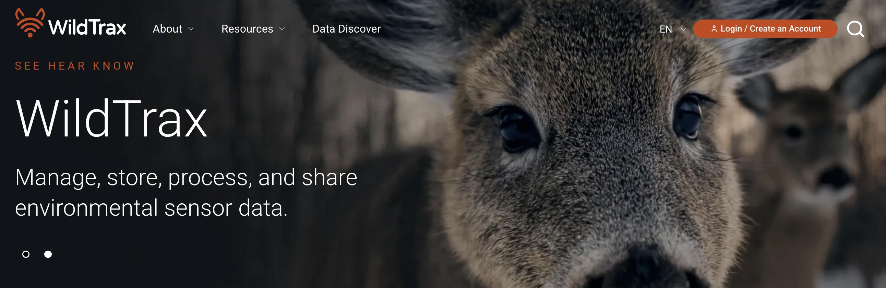
WildTrax makes it easy for you to manage, process, store and share your environmental sensor and transform it into biological data that you can share with others. With WildTrax you can:
- Manage all components of environmental sensor and biological data from field metadata to media to species observations
- Store data safely and securely while still making it accessible to users
- Process environmental sensor data to a high degree of data quality and integrity
- Share environmental sensor and biological data with other WildTrax users, collaborators and the public
- Discover data in your study area or across the WildTrax system
Environmental sensors (such as autonomous recording units [ARUs] or remote cameras) are an increasingly common monitoring method used to measure environmental and ecological attributes across broad geographic scales. These sensors allow for automated collection of data over an extended period and can generate large amounts of valuable biological data.
Biological data, such as counts of animals, their behaviour, or other attributes, can be derived from environmental sensors. WildTrax seamlessly integrates such data across multiple sensors, with the additional capacity to incorporate data from point counts, a commonly used method for evaluating species’ relative abundance, especially birds.
Open data is data that can be accessed, re-used or redistributed by anyone and is freely available in a usable and convenient format. Open data benefits the scientific community and society. Data accessibility allows users (e.g., researchers, conservation practitioners and the public) to find, manipulate and analyze data, as well as link data to other types of information. Open data can lead directly to conservation knowledge and action. This requires data to be usable, compatible with other datasets, and reliable.
The WildTrax platform was developed by the Alberta Biodiversity Monitoring Institute (ABMI) and the University of Alberta. The ABMI is an arm’s length, not-for-profit scientific organization that has been providing scientifically credible tools and information products on Alberta’s biodiversity and human footprint to provincial government, industry, environmental decision-makers, and Albertans since 2003. The ABMI has since become a global leader in the application and development of biodiversity monitoring.
WildTrax acknowledges that it was conceived and is developed on the territory of the Néhiyaw (Cree), Niitsitapi (Blackfoot), Métis, Nakoda (Stoney), Dene, Haudenosaunee (Iroquois) and Anishinaabe (Ojibway/Saulteaux), lands that are now known as part of Treaties 6, 7 and 8 and homeland of the Métis. We respect the sovereignty, lands, histories, languages, knowledge systems and cultures of all First Nations, Métis and Inuit nations.
WildTrax is continuously improved based on user needs and stakeholder engagement processes. Sign up for the newsletter in User settings or check out the News page to get the most up-to-date feature releases. Each sensor in WildTrax is supported organizations who have help pave the way for a multi-sensor experience in WildTrax. Visit our full list of Partners and Sponsors.
The pronoun “you” throughout this guide refers to the reader. “We” refers to the WildTrax Team in general.
2 Getting Started
2.1 Creating an account
Click on LOGIN in the top ribbon.
Follow the steps to create an account—after you verify your email and have logged in, your account will be activated and you can begin using WildTrax. When you are logged in, your first name will appear on the right side of the ribbon, as will the My Data menu.
2.2 Understanding the data hierarchy
2.3 Understanding the data workflows
2.4 Publishing data
3 Data Discover

Data Discover is the central hub for exploring environmental sensor data in WildTrax. Data Discover allows you to see which organizations have published data on WildTrax and which species were detected, and explore media elements such as images and sounds captured in the environment. In Data Discover, you can search for data from ARUs, cameras, and point counts, using a variety of attribute filters, and create summary statistics within a dynamic mapping interface where you can gain a comprehensive understanding of environmental sensor data in an area that interests you.
After using Data Discover, you may have found an organization or project that you’re interested in – so what’s next? Head over to either the Organization or Project dashboard to find out more about the data owners or the project or to request access to the data. Once you are granted access by the project administrators, proceed to Data Downloads to acquire the data.
3.1 Filters
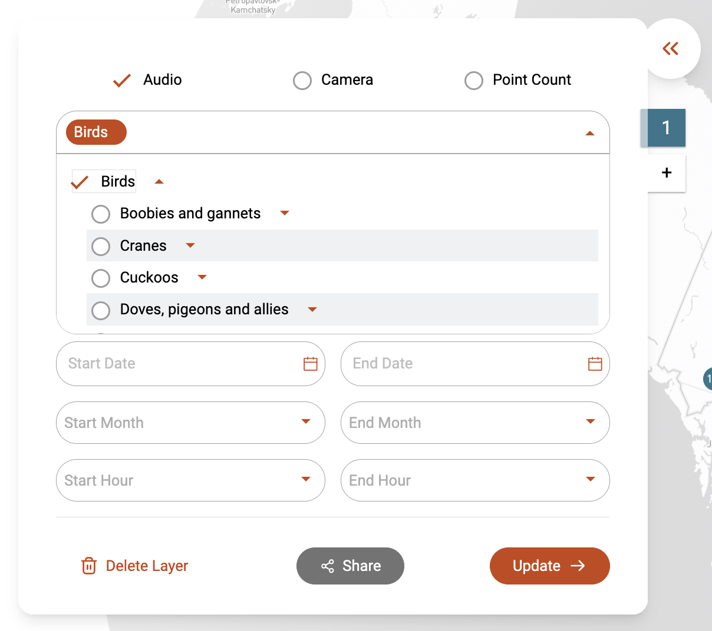
Use attribute filters or select a specific sensor to search available data. On the left side of the interface, the Filter Panel houses various filters for refining your search. Results will be displayed on the map and in a table below. Ensure locations with spatial coordinates are visible on the map, and toggle between different base maps (light or satellite) in the top right corner.
You can search by:
- Taxonomy: Classify data based on class, order, family, and genus.
- Species: Search for individual species or add multiple species to your selection.
- Organizations
- Projects by sensor, either ARU, camera, or point count
- Dates and times (also months and hours) within set intervals or with start and end dates
Note you must select one sensor must be selected before you can proceed with other You can delete the selected options in the filter panel at the bottom left of the panel using Delete Layer.
3.2 Layers
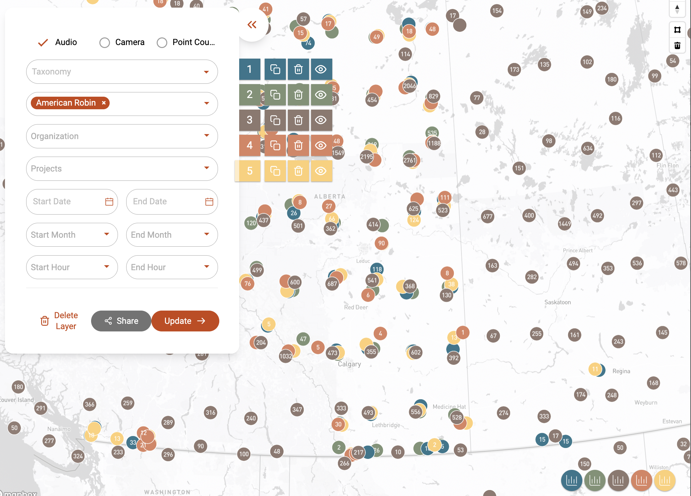
Explore data in depth with up to five customizable layers. Create a new layer by clicking on the 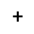 icon. The colours for the points correspond to the layer in the filter panel. By hovering over the layer number, you can duplicate an existing layer to preserve its results and further refine your exploration, use the garbage can icon to delete the current layer, and the to control the visibility of the layer on the map. Each summary insight in the bottom-right corner is also colour-coded to correspond with the layer’s filter.
3.3 Summaries and insights
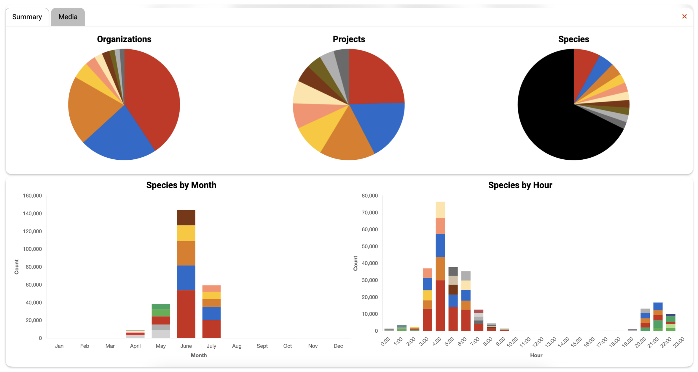
Summary Statistics offer a visual representation of the organizations, projects, species, and tag counts in your layer. Access the entire layer’s summary by clicking the Layer Summary icon in the bottom right corner. This will also bring up the Summary Window. Within the Summary Window, insights are available in the Summary and Media tabs:
- Summary Tab: View pie charts detailing the number of organizations, projects, and species for your selected area. Scroll down for bar charts representing tag counts across months and hours.
- Media Tab: Tiles correspond to species tags. Play audio clips or view images. Observe the minimum and maximum frequency of an audio clip in its ARU spectogram. Note that point counts do not include any media.

3.4 Polygon Tool
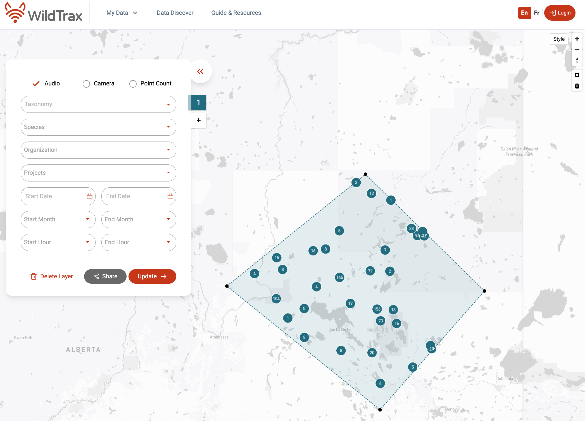
Refine your selection to an area of interest using the polygon tool in the top-right corner . One polygon per layer is supported. To draw a polygon, click the tool, then click on the map to define points, completing the shape by clicking back to the original point. To remove a polygon, select it on the map and click the Garbage can icon.
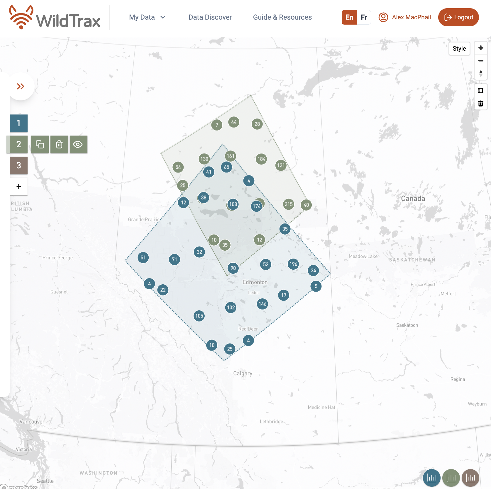
4 Accounts, membership and permissions
WildTrax operates under a role-based access control system, meaning a user in the system represents an individual, not an organization or a group of people. This restricts access to authorized users and is a policy-neutral mechanism designed to create roles and privileges. These users can then collaborate to manage data or share data to answer broader scientific questions.
This means that you may not have access to certain features, tools or data depending on your permissions level. Permission to project data is also limited by the location settings, and publication status.
4.1 User settings
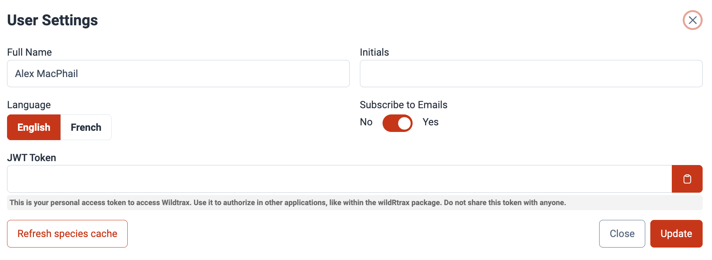
The user settings dashboard can be accessed by clicking on your username in the top right corner of the top ribbon when you’re logged into the system, for example 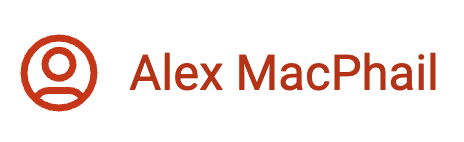.
The user settings dashboard controls the following properties related to your account:
- Name: your full name
- Initials: an acronym or set of initials you can use to define an observer or user
- Subscribe to Newsletter: a toggle that will opt you in for occasional WildTrax newsletters delivered to your email
- Language: your default language. Currently available in English and French.
- Affiliation (optional): the organization, institution or group of which you’re a member or user in the system.
Once you’ve made your desired changes, click the button.
4.2 Language
You can change the language in the site at anytime from the top ribbon toggle 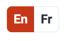. If you want to permanently change the language, go to User settings and change it to your preferred language.
4.3 Membership and privacy settings
5 Organizations
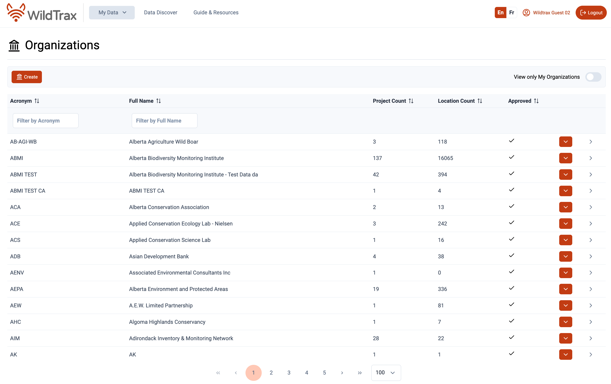
Organizations sit at the top of the WildTrax hierarchy and are the central entity to which environmental sensor data, biological data and metadata are associated. When in doubt, if you’re looking for any information in WildTrax, you can likely find it under the organization. Organizations represent groups of users who collect data, design and publish projects, manage equipment and survey locations. Organizations allow you to coordinate efforts with multiple WildTrax users to create a structured, standardized dataset. Examples of organizations include government branches, industry, research labs and non-profits.
5.1 Organization settings
Click on My Data in the top ribbon, followed by My Organizations. This will take you to the organization dashboard. Click Create an Organization. From here the organization settings form will appear.
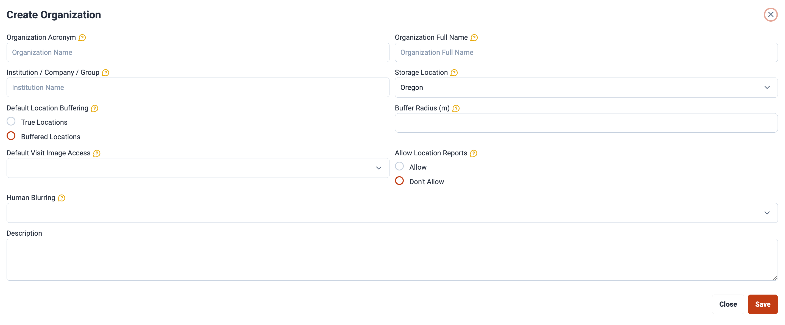
Fill in the fields in the form and click Save. A WildTrax administrator will need to confirm your identity before approving your new organization request. If you’re having any technical difficulties creating an organization contact WildTrax Support.
- Organization acronym: a short-hand name for your organization (e.g., ABMI)
- Organization full name: the full name of the organization
- Institution / company / group: the institution the organization is a part of, such as a university or government branch
- Storage location: where the data will be stored
- Default location buffering: the organization’s default for whether the coordinates entered are exact (“True Locations”) or randomly offset (“Buffered Locations”) by a specified radius.
- True Locations: used if the coordinates entered pertain to exact location coordinates.
- Buffered Locations: used if the coordinates entered are randomly offset by a specified radius (i.e., the “default buffer radius [m]”).
- Default buffer radius (m): the organization’s default location buffer radius (m). This is the radius of the buffer around the location (in metres) within which the coordinates have been randomized (0 m if coordinates have not been hidden).
- Allow location reports: creates location summary reports when enabled.
- Default visit image access: default privacy setting that will be applied to visit photos uploaded to the organization.
- Human blurring: an organization-wide setting for the type of users for which the Auto-tagger will blur humans detected in images, if any. Options include:
- Blur for anonymous users: images of humans will be blurred for all non-read only/non-admin WildTrax users if project data is visible based on the project status.
- Blur for everyone: images of humans will be blurred for all WildTrax users regardless of their organization or project membership.
- Blur for non-admins: images of humans will be blurred for all read-only WildTrax users.
- Images categorized as “Human” are blurred if the human and vehicle prediction thresholds sum to >95.
- Organization description: a short description of the organization.
- Default settings: can be applied at the organization level if you do not want to manually perform operations such as location buffering or visit image access.
5.1.1 Storage location
5.1.2 Default location privacy settings
5.1.3 Default image privacy settings
5.1.4 Manage organization members
5.2 Locations
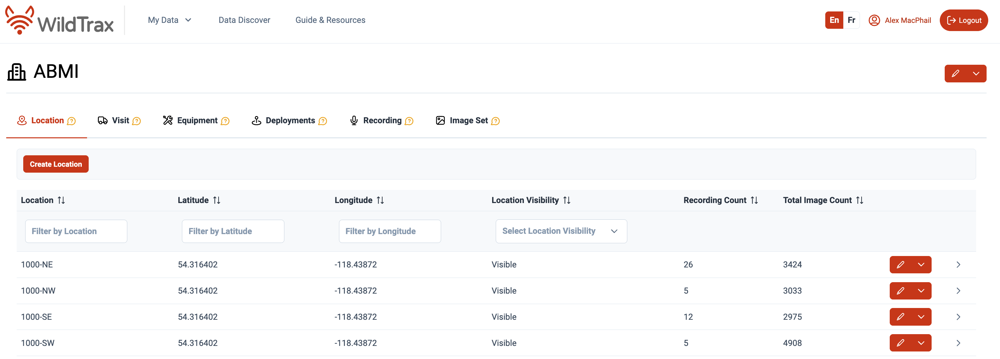
5.2.1 Create locations
5.2.2 Mapping locations
5.2.3 Location settings and privacy options
5.2.4 Location photos
5.2.5 Sync locations
5.2.6 Merge locations
5.2.7 Delete locations
5.3 Visits
5.3.1 Create visits
5.3.2 Sync visits
5.3.3 Delete visits
5.4 Equipment
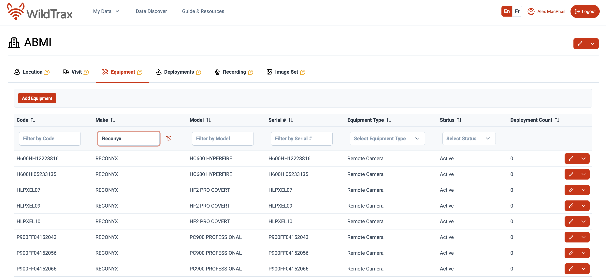
5.4.1 Add equipment
5.4.2 Manage equipment
5.4.3 Sync equipment
5.4.4 Delete equipment
5.5 Deployments
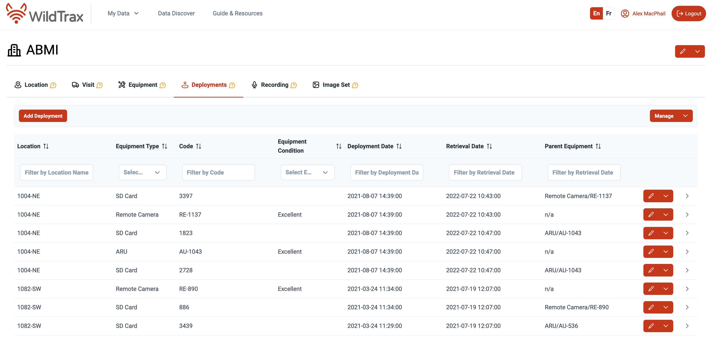
5.5.1 Add deployments
5.5.2 Manage deployments
5.5.3 Sync deployments
5.5.4 Delete deployments
5.6 Recordings

5.6.1 Upload recordings
5.6.2 Acoustic classifiers
5.6.3 Filter recordings
5.6.4 Generate tasks
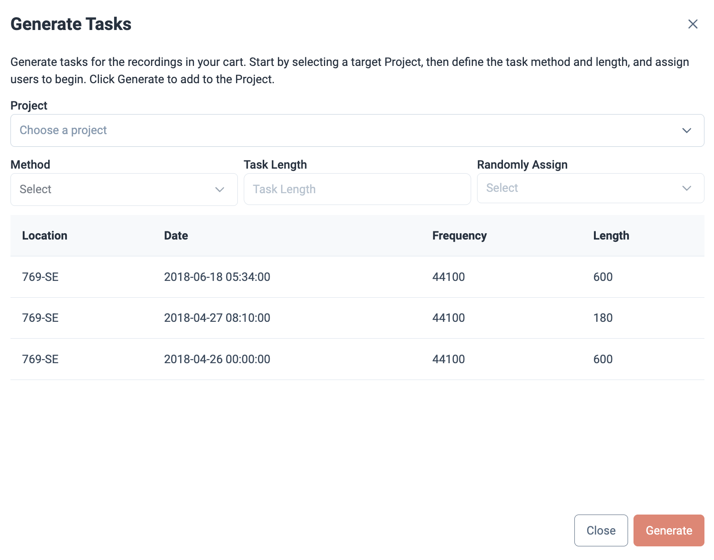
5.6.5 Delete recordings
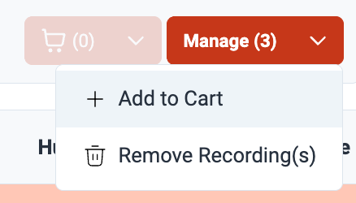
5.7 Image sets
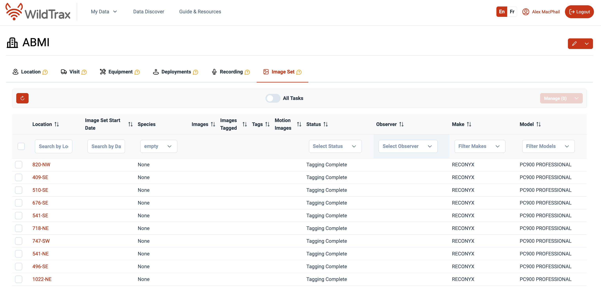
6 ARU Projects
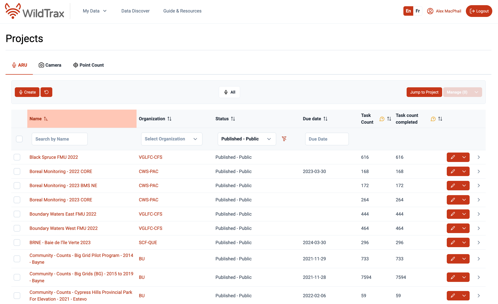
6.1 Audio data concepts
6.1.1 Sampling design
6.1.2 Recommended equipment
6.2 ARU project management
6.2.1 Create an ARU project
6.2.2 Species assignment
6.2.3 User assignment
6.2.4 Uploading recordings and creating tasks
6.2.5 Syncing data to ARU projects
6.2.6 Setting up an ultrasonic project
There are some specific steps needed in order to setup a project appropriate for ultrasonic data. Note that the majority of WildTrax’s
6.2.6.1 Uploading recordings
Under the My Projects tab you can find your project and manage it to upload recordings.
6.2.7 Downloading reports and media
6.2.8 Merge projects
6.2.9 Delete a project
6.2.10 Publishing a project
Need to understand more about how to publish a project? Check out the video tutorial below.
6.3 Acoustic Tagging
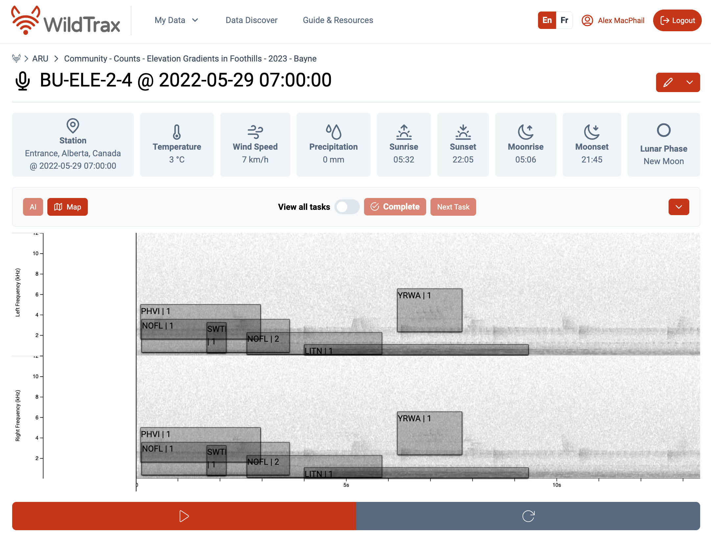
6.3.1 Spectrogram controls and audio settings
6.3.2 Noise, weather and malfunctions
6.3.3 Acoustic tagging methods
6.3.4 Avian individuals and abundance
6.3.5 Amphibian abundance
6.3.6 Confidence and classifying unknowns
6.3.7 Vocalization type
6.3.8 Ultrasonic species
6.3.9 Acoustic classifiers
6.3.10 Species verification
7 Camera Projects
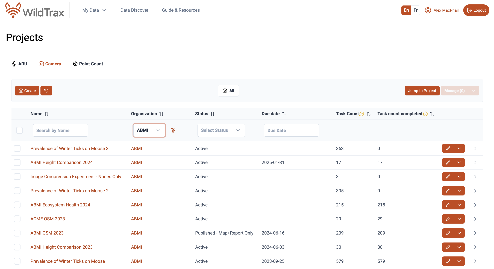
7.1 Camera data concepts
A remote camera can be deployed at a location for a short or long period of time. One or several units can be deployed at a single location for years, swapping out the batteries and SD cards every so often depending on usage, or the unit(s) can be moved to a new location. This flexibility provides great benefit to a user or researcher, as the only limitation to data collection is storage space and battery life. Depending on the length of time these units will be in the field prior to being serviced, camera settings can be changed to optimize battery life. When developing a remote camera sampling design for questions related to density estimation, relative abundance, occupancy modeling, etc., strong considerations should be made regarding the length of time in the field, number of units to install and the distance between units. Resources on camera deployment methods, sampling protocols and analytical approaches can be found in the Resources section.
7.1.1 Recommended equipment
7.2 Camera project management
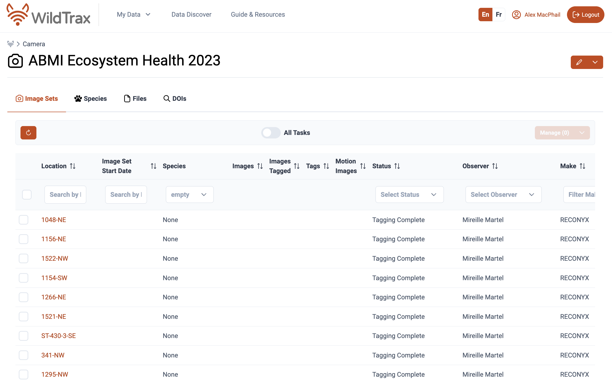
7.2.1 Create a camera project
7.2.2 Camera project settings
7.2.3 Species assignment
7.2.4 User assignment
7.2.5 Uploading images and creating tasks
7.2.6 Image sets
7.2.7 Image auto-classification
The use of remote cameras can lead to the capture of hundreds, thousands or even hundreds of thousands of images in a single image set. The large data sets collected are a benefit to users; however, image processing is also usually a bottleneck to producing meaningful data in a timely manner. The time required for humans to process each image and categorize animals or humans can be incredibly time-consuming and inefficient. WildTrax’s auto-tagger features allow you to reduce the time required to review remote camera images by applying tags to images, or auto-tagging before you begin manually tagging. WildTrax’s current auto-tagging classification includes:
- MegaDectector Version 6 (MDV6-yolov10-e) from Pytorch Wildlife.
- The STAFF/SETUP tagger
The STAFF/SETUP tagger is a setting used to select the application of the STAFF/SETUP tag automatically to image sets. The auto-tagger will automatically tag images of humans that occur within the first or last series as “STAFF/SETUP” (using a 5-minute series gap), unless there are <2 images auto-tagged as human, or the STAFF/SETUP tag has already been applied.
Once you’ve applied auto-tagger setting in Camera project settings, any image data uploaded into the project will be run through the auto-tagger based on your selection of classifier categories before they become available for tagging.
7.2.8 Syncing image data to camera projects
7.2.9 Downloading reports and media
7.2.10 Merge projects
7.2.11 Delete a project
7.2.12 Publishing a project
7.3 Image Tagging
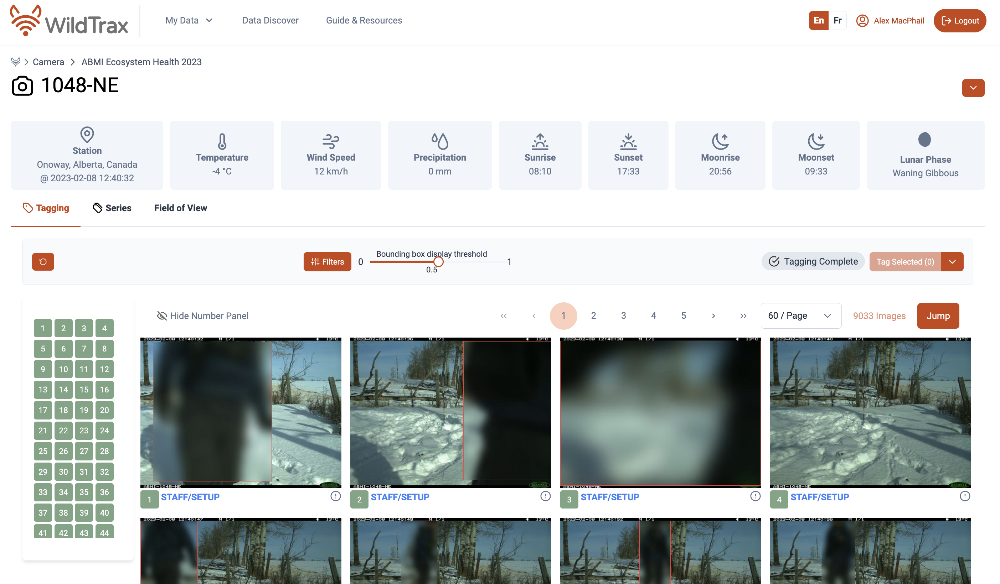
7.3.1 Tagging page controls and settings
7.3.4 Filter panel
7.3.5 Image classifiers
7.3.6 Field of view review
7.3.7 Species verification
8 Point Count Projects
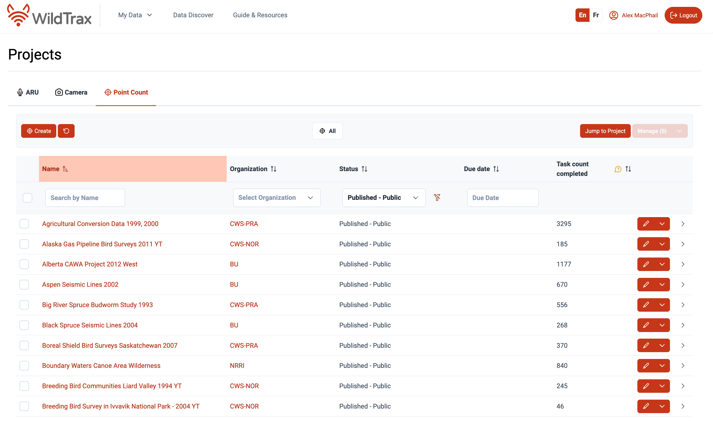